The Renick family is one of the oldest families in Pickaway County. They are largely descended from Felix Renick, whose jumping cows were the stuff of legend in nineteenth century Ohio. Today they're best known for their huge farm market on Route 23 just north of South Bloomfield. Across the highway and down a bit from the market stands one of their family farmhouses, now empty. This is a fantastic house--huge, with something like six bedrooms. The first time I went my friend Elvis and I got inside and used his night vision camera to take a complete tour; Elvis almost stepped on a raccoon on the basement steps, and we came across the bedding and half-full whiskey bottles of a homeless person. The second time Rookie and I couldn't get in. I did get some interesting exterior shots, though. Every indication I have is that this house is still watched and used for storage, so be careful.
 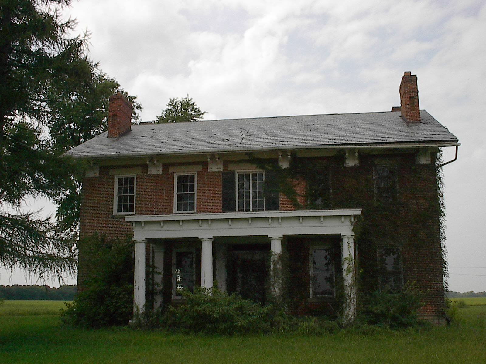
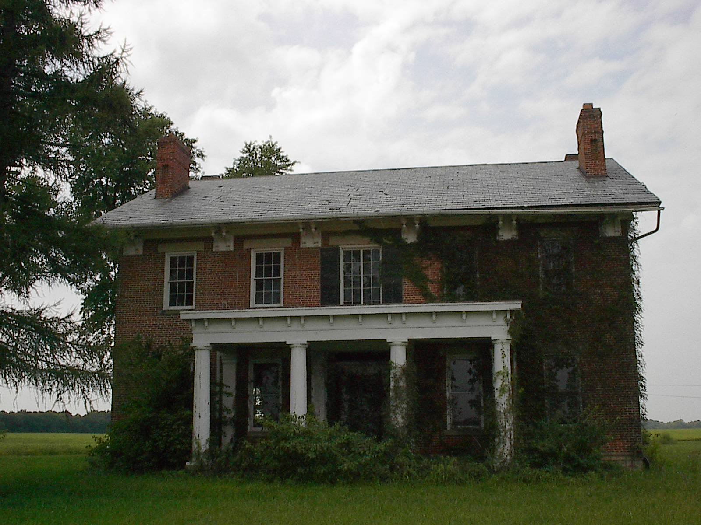

 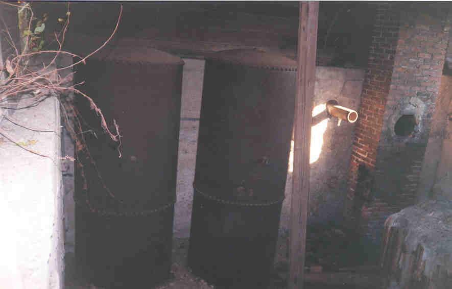
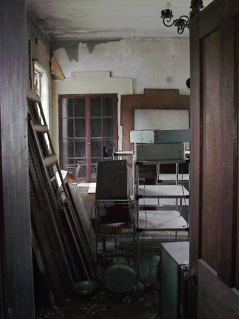
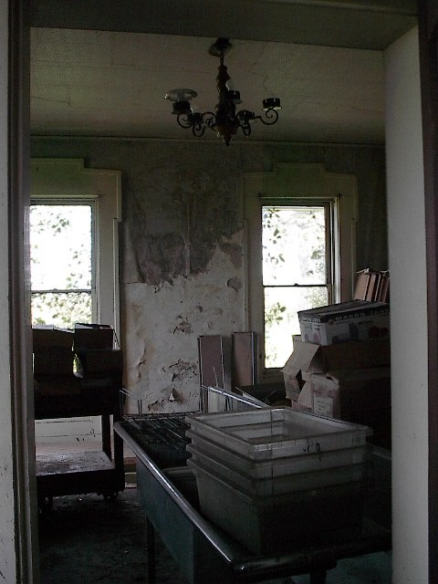
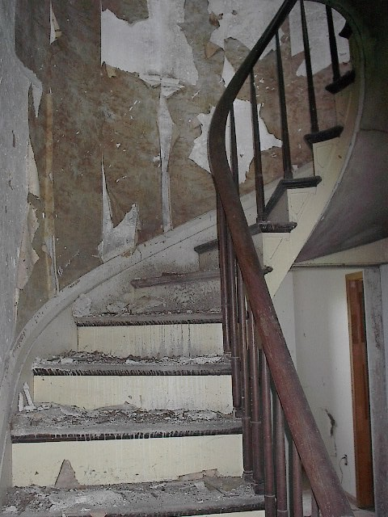
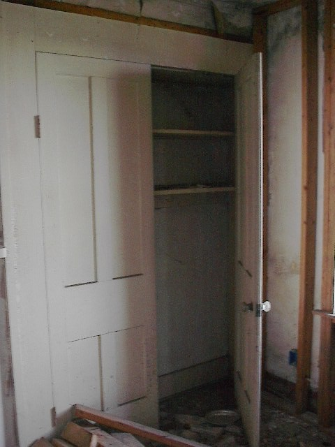
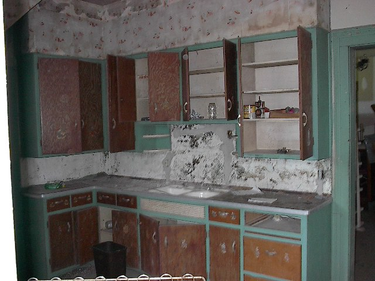
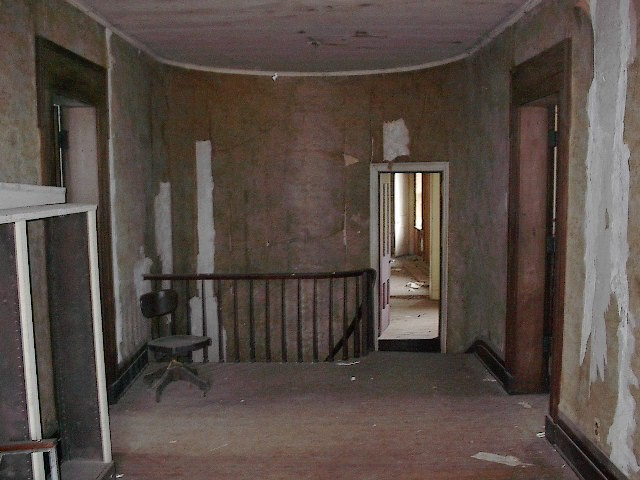
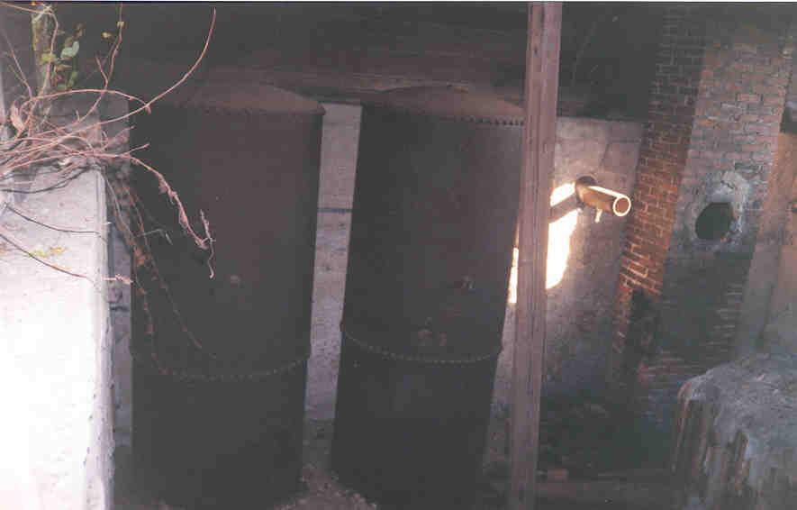
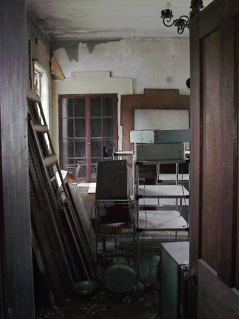
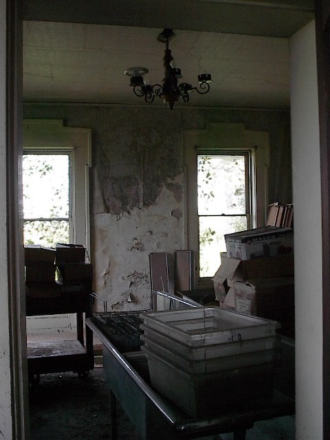
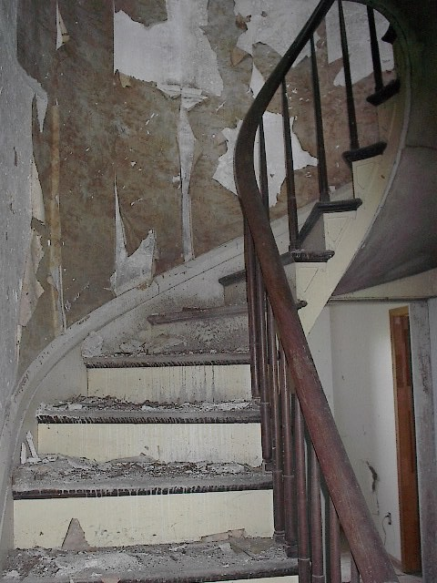
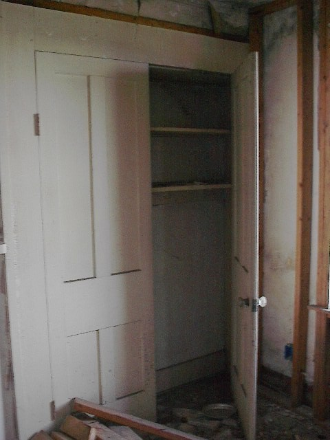
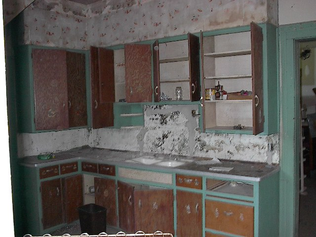
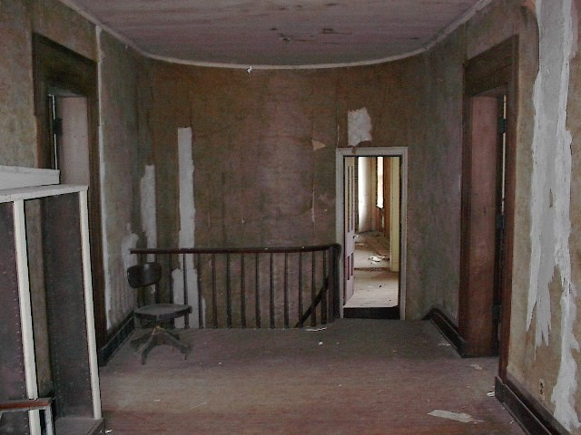